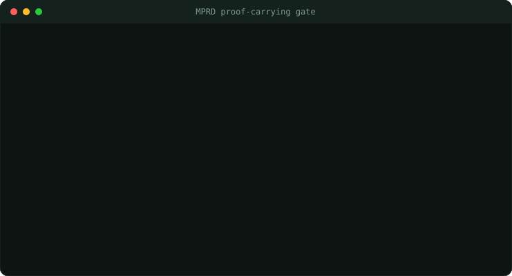

Summary
MPRD is built around a simple control boundary. An untrusted model generates candidate actions. A deterministic rules layer issues the evidence required for execution. The model has no direct execution capability.

demos/agent_gate_demo.py, standard library only) — the pattern MPRD implements at scale. Only the policy-admitted, signed, fresh, first-use action executes; every other path fails closed. Clone the repo and run it yourself.
Portfolio signal: MPRD demonstrates architectural judgment: capability separation, typed execution boundaries, policy/state/action commitments, and fail-closed verifier behavior.
What a reviewer should inspect first
README.md- high-level thesis and architecture.crates/mprd-core/- core types and execution-boundary language.proofs/lean/- proof artifacts and theorem surfaces.docs/RC1_BLOCKERS.md- honest remaining gaps before stronger release claims.docs/PRODUCTION_READINESS.md- implementation status and production-readiness posture.
Suggested 10-minute review script
Open the README, then inspect the core execution token / proof bundle types. Finally, read the blocker board before evaluating any high-level safety claim.
Claim / evidence map
| Claim | Evidence to show | Status |
|---|---|---|
| Model output has no direct execution path in the architecture. | Executor APIs should require verified token, receipt, or ready bundle inputs. Raw model output stays outside the execution API. | Partial / architecture-level |
| Policy, state, candidate, and action commitments are part of the execution transcript. | Core types, hashes, proof bundles, verifier checks, and tests. | Partial / bounded |
| Production deployment is fully safe. | Would require complete proof chain, deployment assumptions, operational controls, and external review. | Not claimed |
Limitations to state clearly
- A formal gate is only as good as its policy, state provenance, implementation boundary, and deployment assumptions.
- Architecture-level separation gives a bounded claim about the execution boundary.
- Strong claims should be scoped to exact modes, exact toolchains, exact threat models, and exact replay/proof commands.
Next portfolio step
Create a small public companion repo: proof-carrying-agent-gate. It should be tiny, runnable, and use a simple invariant: no side effect occurs without a valid policy receipt.